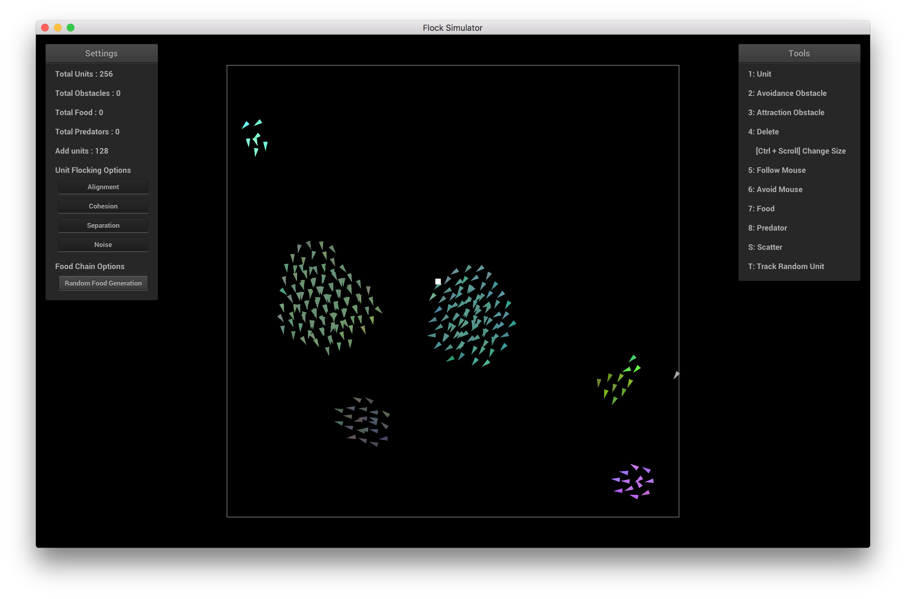

CS 184 Final Project by David Hahn and Gloria Hwang
For our final project for CS 184: Computer Graphics and Imaging, we decided to explore the concept of simulating artificial flocking behavior in a graphics engine. We used the ideas presented in a paper written by Craig Reynolds as a basis for our simulation. While we focused on movements that resembled the behavior of fish in a body of water, other groups of animals, for example a flock of birds or a herd of zebras, could be simulated following a similar high level design. The realism of the behavior can be furthered by tweaking the movement parameters and adding different force vectors to better simulate the animal's behavior.
All the code we wrote can be found here. We reused code from the cloth simulator project which is why the GUI and code may look familiar.
There are 3 force vectors that build up the foundation of flocking behavior: alignment, cohesion, and separation. Each image depicts the relevant force vector for a specific unit (marked in red).
Alignment
A given unit attempts to face the same direction as its neighbors.
Cohesion
A given unit attempts to move to the center of mass of its neighbors.
Separation
A given unit attempts to move away from neighbors who are too close.
The alignment vector is calculated using neighboring units' normalized velocity vectors. The cohesion vector is calculated using the difference between the neighbor's position and the unit's position. The separation vector is the opposite of the cohesion vector. For cohesion and separation, the contributions are also divided by the neighbor's distance from the unit so that units that are further away have less impact than those which are close. The individual contributions of each neighboring unit are averaged to output the final vector.
Each of these vectors is taken for a given radius around the unit. The radii are staggered like concentric rings. So given 3 radii a, b, and c, where a < b < c, separation is only calculated using units within the circle with radius a. Alignment is only calculated using units within the disk with inner radius a and outer radius b. And finally, cohesion is only calculated using units within the disk with inner radius b and outer radius c. This is why the separation and cohesion vectors would not simply cancel each other out.
One last detail is the cruise speed vector. We gained this insight by looking at a similar flocking simulation project by Emilee Chen last year. The purpose of this vector is to limit the speed of the unit so that it does not accelerate uncontrollably. We simply take the difference between the target cruising speed and the current velocity and then scale the velocity's unit vector by this. This vector is thus also used in the acceleration vector computation.
Cruise
A given unit attempts to accelerate towards the cruising speed whether it is moving too quickly or too slowly.
We noticed this worked a lot better than simply limiting the magnitude of the velocity vector, since this allows the change to occur in acceleration and thus less direct and unstable impact on the velocity.
We take these force vectors and then weight them by some weights depending on how much we want each vector to contribute to the overall force. For our purposes, the separation vector was weighted the most, then the cohesion vector, then the alignment vector. Finally, we add the weighted vectors together and treat this as an acceleration vector.
We limit the magnitude of the acceleration vector so acceleration can never be too large. Then, for any given
time step, we calculate position and velocity as follows via semi-implicit Euler:
x(t + dt) = x(t) + v(t + dt)
v(t + dt) = v(t) + a(t)
With this, the basic functionality of a flock of units is complete. We additionally added a simple color averaging function and some random noise into unit colors which is why they change colors when joining a group.
All 4 Force Vectors at Work
Notice alignment and cohesion are relatively stable but separation and cruise are more reactive. This is due to the large potential variance they introduce in their calculations.
Flocking Behavior
We have flocking!
Adjusting weights and radii results in different flocking behaviors where different vectors
are favored over others.
We additionally implemented obstacles which impact unit movement: avoidance and attraction obstacles. As their names suggest, units will move to avoid colliding with obstacles when within a certain distance of them and will move to get closer to attraction obstacles no matter how far away they are. Both vectors are created by first calculating the unit direction from the obstacle's position to the unit's position for attraction obstacles and vice versa for avoidance obstacles. Then, we take each of these vectors and find the difference with the units' current direction. This is the avoidance or attraction vector for a given obstacle and we compute the final vector by averaging over all obstacles.
Below is an example of a unit moving towards an attraction obstacle, but comes across an intermediary avoidance obstacle. The yellow line represents the unit's avoidance vector and the red line represents the unit's attraction vector.
Avoidance and Attraction Obstacles
Notice the attraction vector doesn't change drastically until the unit is affected by the avoidance obstacle. This is because the unit's attraction vector attempts to correct the current velocity to travel towards the attraction obstacle.
The obstacle avoidance and attraction vectors are also weighted and used in the overall acceleration calculation detailed above. When the unit is part of a larger flock, the unit's behavior is not only affected by its avoidance and attraction vectors, but also the behaviors of its neighbors in the flock.
Avoidance Obstacle
Units attempt to avoid these obstacles and move away if they collide with them.
Attraction Obstacle
Units are attracted to these obstacles and attempt to crowd around them.
After implementing the static obstacles, we thought it would be interesting to see how movement of the obstacles would affect the units' behavior. We used the mouse's position to accomplish this movement. The units will follow the mouse in attraction mode and be afraid of the mouse and move away in avoidance mode. The vector is calculated very similarly to the collision obstacles above.
Avoid Mouse
Units attempt to avoid the mouse and move away if they collide with it.
Follow Mouse
Units are attracted to the mouse and attempt to crowd around it.
These vectors are also weighted and used in the acceleration vector calculation.
Now that our regular units had a decent amount of functionality, we decided that it would be interesting to try to code another type of unit which has different movement characteristics. We decided to introduce predator units which, as their name suggests, are capable of eating our regular flock units. In addition, we tried to emulate the movement of a shark which slowly approaches its prey, stalking it in the water, then jumps out quickly to try to catch it. We can split the predatory behavior into 4 subgroups: prey seeking, death, speed, and predator avoidance.
Prey Seeking
Predators seek prey and turn red when they eat.
(Jumping and predator avoidance were turned off)
Death
Predators die if they don't eat within a certain period of time.
(No flock units generated)
Speed
Predators can jump forwards. Speed is available when the predator tail is green and grey otherwise.
(Predator avoidance was turned off)
Predators are hungry and will seek out prey they are not full. During this time, they will move much more slowly than regular flock units, similar to a predator stalking its prey. Acceleration vectors are computed similar to how they are for flock units but in this case, we only really have two vectors involved which are seeking prey and separation from other predators. There is a noise vector as well to add a small amount of randomness to the predators' movement.
When predators eat, they will be "full" for a short period of time which is indicated by them turning red. Their seek vector is computed similar to the attraction obstacle seek vector is calculated for a normal flock unit. They will go towards the average direction of their food.
Predators don't live forever like flock units do. They will die if they do not eat within a certain amount of time. As they get closer to their death, their color becomes more white. They simply disappear when they die.
Predators are able to jump forwards with a burst of speed that outmatches the max speed of any flock unit. This gives them a natural advantage in terms of pure magnitude. However this jump has two disadvantages:
When a predator collides with a flock unit, that unit dies and the predator has "eaten" so it resets the counter keeping track of how close to death it is. The predator ignores prey for a short time while it is "full" indicated by its color being red.
Given the danger predators pose to prey, it would not be very fair for the prey units to be unaware of predator units swimming around them. So prey units will actively attempt to avoid predator units similar to how they avoid avoidance obstacles. However we limited the prey's vision of predators to allow the predators a good chance of catching their prey. This gives the prey a chance for survival but a limited chance at that.
Combining these attributes of the predatory behavior, we get some interesting interactions between predators and prey which you can see below. The prey attempt to remain in their flocks but also prioritize avoiding predators. And predators are able to disrupt groups of flock units due to this avoidance. Sometimes when a predator attacks, it is unsuccessful in capturing its prey. However many times, it is successful thanks to its superior speed.
Predatory Behavior
Predatory behavior in action. AKA a feeding frenzy.
To display our flock simulation, we first extended the cloth simulation GUI. In order to the make the flock simulation more interactive and informative, we made a GUI with useful metrics and the ability to toggle all the features implemented above. Furthermore, we created a visualization of all the different forces and obstacles acting on a unit by creating a debug toolbar that tracks a unit and shows vectors corresponding to individual forces. Additionally, the environment is defined by the white outline and when units cross an environment border, they come out no the opposite side.
Flock Simulation GUI
Main GUI seen when running the simulation
Unit Tracking GUI
GUI seen when tracking a unit
Settings Panel
General metrics and buttons for changing flock behavior
In this panel, we display a number of totals which keeps track of how many units, obstacles, food, and predators. The add units metric is the number of units that will be added by the unit generating tool per click.
Below the metrics are some buttons for controlling flocking behavior. These are all on by default but toggling them simply turns the force vector on or off, in other words whether or not it will be used in the acceleration vector calculation:
The last button is random food generation which puts food in a random location in the environment periodically. Food is a feature we didn't fully have time to flesh out but essentially, food units enact a similar attraction force on flock units as do attraction obstacles. The only difference is the radius of the force is limited and units reproduce, in other words create a new unit, when they eat food.
We also added an array of tools users can use, represented by different colored cursors. On the right side, there is a legend on the right hand side of the GUI listing these tools users as well as the keyboard presses required to switch between tools.
Tools Panel
All the tools we created for users to interact with the simulation
Tracking Panel and Debug Vector Toolbar
Shows index of unit being tracked
Debug Toolbar for Tracking
Allows selection of which force vectors are displayed in tracking mode
As mentioned above, the keyboard shortcut "T" zooms in on a random unit and colors it red for visibility. By zooming in on one unit, we are able to see how the neighboring units in the same flock, and the obstacles affect this unit via the debug vectors. The tracking panel shows the index of the currently tracked unit and users are able to cycle through units using the left and right arrow keys. To exit tracking mode, simply press "T" again.
Below is a list of available debug vectors:
Here are a couple of demo gifs we put together. Below them is a demo video which goes through the entire array of features as well as how to use the GUI.
Orbiting
Many of us spend our lives swimming, searching for our purpose.
Bordered
Just keep swimming.
Crowding
Just like a crowd of people trying to get through a small store entrance on Black Friday.
Demo Video
Video explanation of the flocking behaviors we implemented and our GUI features.
I really enjoyed working on this project. Even though the end result is not as visually stunning as some of the renderings we did in the ray tracing project, this project had its own obstacles and I learned a lot from working on it. The behavior of the units is the real focus of this project and I'm glad we were able to create a simulation that was able to emulate flocking behavior.
Thankfully a lot of things were implemented for us already since we extended the cloth simulation code but a big issue we encountered was getting our flock units to not jitter between directions. A huge breakthrough on this was made when we went to office hours and got some advice from Kevin about adding the force vectors to the acceleration of the unit rather than what we were doing originally which was adding them to the velocity of the unit.
One thing that we didn't get around to that I think would have been really cool is making the simulation more realistic would be to rasterize textures onto the units and create some animation keyframes for the fish swimming and the predators eating units. We considered this feature but deemed it a little too high risk high reward especially considering the challenges of overcoming the uncanny valley so we went with creating the predator units instead. Performance optimizations is another thing I think I would work on if I extend this project in the future as our CPU based simulation cannot support more than 500-ish units at a time.
I had an awesome time in CS 184 and it ended up being one of my favorite classes that I took during my time as an undergrad at Berkeley. Thank you to Professor Ren Ng and the course staff for putting the class together and answering all my questions.
- David
This was a very interesting project to work on and I definitely took away a lot from it. Although implementing flocking behavior initially seemed straightforward, this project had some problems and details we had to work out. Our main focus for this project was to get the flocking behavior of the units correct and to create an interactive simulation to show all the various behaviors we implemented.
We decided to extend the GUI given to us from the cloth simulator to display our flock simulation. However, because neither of us had experience working with OpenGL, we encountered some trouble when we first started adding parts to our GUI. Once we figured out the basics, it was really exciting seeing the GUI come together, units flock, and using the cursor toggles to interact with our flocks.
Although it would have been really cool to add textures onto the various objects, potentially creating a scene of fish swimming and predator sharks (or the like), we were not able to get around to that. Instead, to create a more interesting scene than just white triangles flocking together, we implemented color averaging for the flocks. As a result, you will notice that units in the same flock have the same color, and when different flocks come together, their colors are averaged to create a new color for the bigger flock.
I had an amazing time taking CS 184 this semester! This class, being my first upper division CS class, was very intimidating in the beginning and challenging at times. However, every project I worked on was fascinating and the results were stunning. Thank you Professor Ren Ng and the course staff for a great semester.
- Gloria